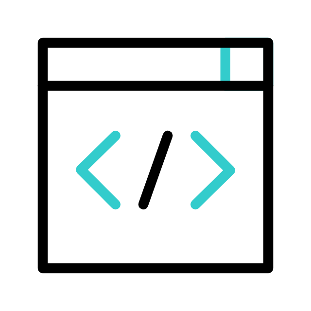

Projects
Throughout my journey, I have undertaken various creative and
technical projects that highlight my I I’ve developed innovative
websites and participated in group projects, applying creative
solutions to real-world challenges. These experiences highlight my
growing expertise in web design and teamwork.
Learn more...

Certifications
I have earned several certificates in web development, coding, and
software engineering, showcasing my commitment to professional
growth. These achievements reflect my dedication to mastering
essential skills, including full-stack, as well as my ability to
apply this knowledge in practical projects.
Learn more...
Experiences
I’ve contributed to AI, web development, and full-stack development
projects, enhancing system architectures and optimizing processes.
I’ve worked closely with teams to deliver efficient, scalable
solutions and consistently meet performance targets while learning
from peers and mentors.
Learn more...